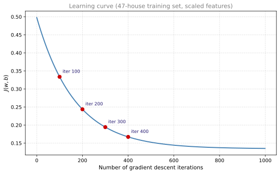
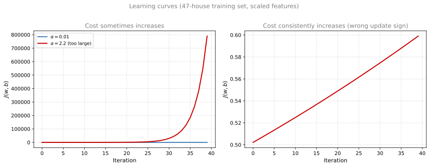
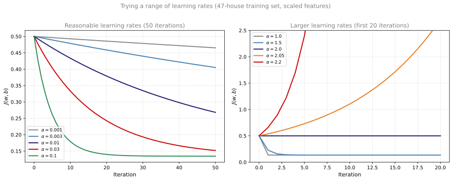
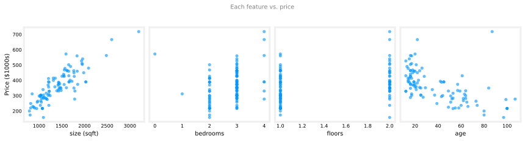
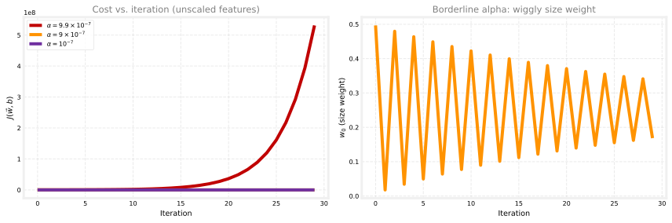
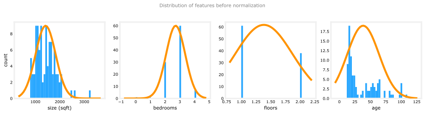
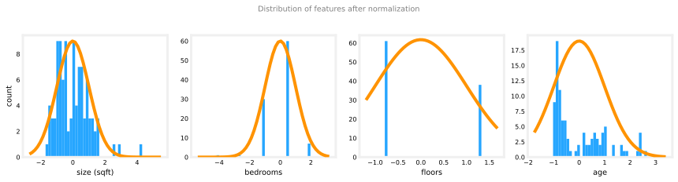
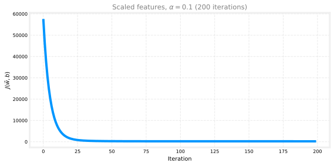
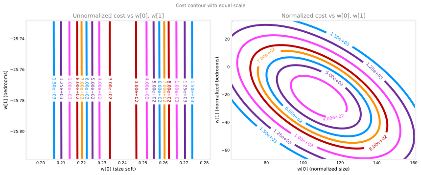
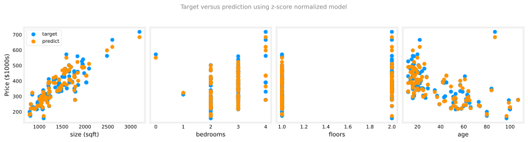

Checking Convergence and Choosing Learning Rate
machine-learning
supervised-learning
regression
When you run gradient descent, how can you tell if it is working? In other words, is it finding parameters and that are close to the minimum of the…
Why Check Convergence?
When you run gradient descent, how can you tell if it is working? In other words, is it finding parameters \(w\) and \(b\) that are close to the minimum of the cost function \(J\)?
Learning to recognize a well-running implementation will also help you choose a good learning rate \(\alpha\).
Recall the gradient descent update rules:
\[ w \leftarrow w - \alpha \frac{\partial}{\partial w} J(w, b) \]
\[ b \leftarrow b - \alpha \frac{\partial}{\partial b} J(w, b) \]
One of the key choices is the learning rate \(\alpha\). A useful diagnostic is to track the cost after every iteration.
Review Questions
1. What is the goal of gradient descent with respect to the cost \(J\)?
TipAnswer
Find values of \(w\) and \(b\) that minimize \(J(w, b)\) on the training set.
1. Which parameter controls the step size at each iteration?
TipAnswer
The learning rate \(\alpha\).
Learning Curve
A common practice is to plot the cost \(J\) computed on the training set after each iteration of gradient descent. Remember that each iteration means one simultaneous update of \(w\) and \(b\).
- Horizontal axis: number of gradient descent iterations so far
- Vertical axis: cost \(J\) at the current \((w, b)\)
This plot is called a learning curve. (Machine learning uses several types of learning curves; you will see others later in this course.)
This differs from earlier graphs in this week where the horizontal axis was a parameter like \(w\) or \(b\) and the vertical axis was \(J\). Here the horizontal axis is iteration count, not a model parameter.
Reading the curve:
- The point at iteration 100 is the cost \(J(w, b)\) after 100 updates to \(w\) and \(b\).
- The point at iteration 200 is the cost after 200 updates, and so on.
The curve shows how \(J\) changes iteration by iteration.
Review Questions
1. What is on the horizontal axis of a gradient descent learning curve?
TipAnswer
The number of gradient descent iterations (how many times \(w\) and \(b\) have been updated).
1. If the cost at iteration 200 is lower than at iteration 100, what does that mean?
TipAnswer
Gradient descent found parameters with a lower cost after more updates. The algorithm is making progress toward a smaller \(J\).
What a Healthy Curve Looks Like
If gradient descent is working properly, \(J\) should decrease after every iteration (or at least not increase).
If \(J\) increases after an iteration, that usually means:
- The learning rate \(\alpha\) is chosen poorly (often too large), or
- There is a bug in the code (for example, not updating \(w\) and \(b\) simultaneously).
A healthy curve eventually levels off. The cost stops decreasing much. That flat region means gradient descent has more or less converged: further iterations give only tiny improvements.
In the plot above, the cost decreases steadily at first. Around iteration 300, the decrease slows noticeably. By iteration 400, the curve is nearly flat: \(J\) changes only slightly over the remaining 600 iterations, which is what convergence looks like on a longer run.
Review Questions
1. What does it mean when the learning curve flattens out?
TipAnswer
Gradient descent has largely converged. The parameters are near a minimum of \(J\), and additional iterations do not reduce the cost much.
1. If \(J\) goes up from one iteration to the next, what should you suspect first?
TipAnswer
The learning rate \(\alpha\) may be too large, causing overshooting. Less commonly, there may be a bug in the implementation.
How Many Iterations?
The number of iterations needed for convergence varies a lot:
- One problem might converge in 30 iterations.
- Another might need 1,000 or 100,000 iterations.
It is very difficult to predict this number in advance. That is why plotting a learning curve is helpful: you can see when the cost has stopped decreasing meaningfully and decide when to stop training.
Review Questions
1. Can you always know ahead of time how many iterations gradient descent will need?
TipAnswer
No. The iteration count at convergence depends on the data, the features, the learning rate, and whether features are scaled. A learning curve helps you decide when to stop.
Automatic Convergence Test
Another approach is an automatic convergence test. Let \(\varepsilon\) (epsilon) be a small positive number, such as \(0.001\) or \(10^{-3}\).
If the cost \(J\) decreases by less than \(\varepsilon\) on one iteration, you are likely on the flattened part of the curve and can declare convergence.
Convergence here means you have found \((w, b)\) close to the minimum possible value of \(J\) on the training set.
In practice, choosing a good threshold \(\varepsilon\) can be difficult. Many practitioners prefer to look at the learning curve rather than rely only on an automatic test. The plot also gives early warning when gradient descent is not behaving correctly (for example, if the cost rises or oscillates).
Review Questions
1. In the automatic test, what does it mean if \(J\) decreases by less than \(\varepsilon\) on one iteration?
TipAnswer
The algorithm has likely converged. The cost is no longer changing much, so you can stop gradient descent.
1. Why might you still prefer plotting the learning curve over using only an automatic \(\varepsilon\) test?
TipAnswer
It is hard to pick a good \(\varepsilon\) for every problem. The plot shows the full story: steady decrease, flattening, divergence, or oscillation.
Choosing Learning Rate
Your learning algorithm will run much better with an appropriate choice of learning rate \(\alpha\). If \(\alpha\) is too small, gradient descent moves slowly and may need many iterations to converge. If \(\alpha\) is too large, the algorithm may overshoot the minimum and fail to converge at all.
The learning curve you plotted above is one of the best diagnostics for whether \(\alpha\) is reasonable.
Review Questions
1. What happens if the learning rate is too small?
TipAnswer
Gradient descent still works, but each step is tiny. Convergence takes many more iterations than necessary.
1. What happens if the learning rate is too large?
TipAnswer
Updates can overshoot the minimum. The cost may oscillate, increase, or diverge instead of decreasing steadily toward a minimum.
Warning Signs on Learning Curve
If you plot \(J\) over a number of iterations and notice that the cost sometimes goes up and sometimes goes down, that is a clear sign that gradient descent is not working properly. This could mean there is a bug in the code, or (more often) that the learning rate is too large.
With an oversized \(\alpha\), each update may overshoot the minimum, land on the opposite side with higher cost, and overshoot again on the next step. That is why the learning curve can bounce instead of decreasing monotonically. See the gradient descent page for a geometric picture of overshooting on a one-parameter cost bowl.
Sometimes the cost consistently increases after every iteration, as in the right panel below. That pattern also points to a learning rate that is too large, or to a bug in the implementation (see the next section).

Review Questions
1. If the learning curve oscillates (cost goes up and down), what should you check first?
TipAnswer
Try a smaller learning rate. If the curve still misbehaves with a very small \(\alpha\), look for a bug in the gradient descent implementation.
1. What does a learning curve that rises on every iteration suggest?
TipAnswer
Either \(\alpha\) is far too large, or the code updates parameters in the wrong direction (for example, using \(+\) instead of \(-\) in the update).
Wrong Sign in Update Rule
A common implementation mistake is to add the gradient term instead of subtracting it:
\[ w \leftarrow w + \alpha \frac{\partial J(w, b)}{\partial w} \quad \text{(incorrect)} \]
The correct rule uses a minus sign so that you step opposite to the gradient (downhill):
\[ w \leftarrow w - \alpha \frac{\partial J(w, b)}{\partial w} \]
With the wrong sign, each step moves away from the minimum, so \(J\) can increase on every iteration even when \(\alpha\) is small. The right panel in the plot above shows this pattern.
Review Questions
1. Why does using \(+\) instead of \(-\) in the update make \(J\) increase?
TipAnswer
Gradient descent should move opposite to the gradient (toward lower cost). Adding \(\alpha\) times the gradient moves in the direction of steepest ascent, away from the minimum.
Debugging Tip: Try Very Small \(\alpha\)
With a correct implementation and a small enough learning rate, the cost should decrease on every single iteration.
If gradient descent is not working, set \(\alpha\) to a very small number (for example \(10^{-6}\)) and run a few iterations. If \(J\) still increases sometimes, there is likely a bug in the code (such as the wrong sign, or updating \(w\) and \(b\) one at a time instead of simultaneously).
Note
Setting \(\alpha\) to a very small value is a debugging step, not a practical training choice. A tiny learning rate converges too slowly for real model training.
Review Questions
1. If \(J\) increases on some iterations even with \(\alpha = 10^{-6}\), what does that suggest?
TipAnswer
There is probably a bug in the code, not just a poorly chosen learning rate.
Trade-off: Speed Versus Stability
If \(\alpha\) is too small, gradient descent can take a very large number of iterations to converge. The goal is to find a value that is large enough to make progress quickly, but small enough to decrease \(J\) consistently.
There is no single magic value for every dataset. The best \(\alpha\) depends on the features, whether you have applied feature scaling, and the scale of the cost function.
How to Choose \(\alpha\)
A practical workflow:
- Pick a starting value, such as \(\alpha = 0.001\).
- Try a short run (a handful of iterations) and plot the learning curve.
- Increase \(\alpha\) in steps, for example multiply by about 3 each time: \(0.001 \rightarrow 0.003 \rightarrow 0.01 \rightarrow 0.03 \rightarrow \ldots\)
- Identify the range: find a value that is clearly too small (slow progress) and a value that is too large (oscillation or divergence).
- Pick the largest reasonable value, or something slightly smaller than the largest value that still gave a healthy learning curve.
You can also try powers of 10 (\(0.001\), \(0.01\), \(0.1\)) as a coarse search, then refine with ~3x steps between candidates.
Worked Example: 47 Houses, Scaled Features
Below is a concrete walk-through on our housing dataset (size only, price in thousands of dollars, both z-score normalized). Each trial runs 50 iterations from \(w = 0\), \(b = 0\).
| Learning rate | \(J\) after 50 iterations | Total drop in \(J\) | Healthy? |
|---|---|---|---|
| 0.001 | 0.465 | 0.034 | Yes, but too slow |
| 0.003 | 0.405 | 0.093 | Yes |
| 0.01 | 0.268 | 0.224 | Yes, good progress |
| 0.03 | 0.152 | 0.326 | Yes, faster still |
| 0.1 | 0.135 | 0.296 | Yes, converges by ~iter 20 |
| 1.0 | 0.135 | 0.365 | Yes, but one step to minimum |
| 2.0 | 0.500 | 0.000 | No (flat, stuck in a cycle) |
| 2.2 | 3e7 | cost explodes | No (too large) |
Starting at \(\alpha = 0.001\): \(J\) moves from 0.500 to 0.493 in the first 10 iterations. That is only about 0.007 of progress, so \(\alpha = 0.001\) is clearly on the slow side.
Multiplying by 3 gives \(\alpha = 0.003\), then 0.01, then 0.03. Each step decreases \(J\) faster while the learning curve still falls on every iteration (no oscillation).
At \(\alpha = 0.01\), \(J\) drops from 0.493 to 0.268 over 50 iterations. At \(\alpha = 0.03\), it reaches 0.152, close to the minimum possible \(J \approx 0.135\) on this data.
At \(\alpha = 1.0\), \(J\) drops from 0.500 to 0.135 in one update and then stays flat for the remaining iterations. That is fast, but on this scaled univariate problem it is still stable: every step decreases cost.
What if \(\alpha\) is too large? Push past 1.0 and training gets rougher before it breaks. At \(\alpha = 1.5\), cost drops sharply on the first step (0.500 to 0.226) but then needs several more iterations to creep down to the minimum near 0.135. Each step still lowers \(J\), but the curve no longer settles quickly.
Between 1.5 and 2.2 there is a striking special case at \(\alpha = 2.0\): \(J\) stays perfectly flat at 0.500 for every iteration. Gradient descent is still updating \(w\) and \(b\) (they bounce between \(w = 0\) and \(w \approx 1.71\)), but both points have the same cost. The learning curve looks like nothing is happening, yet the algorithm has not converged. A flat curve can mean you reached a minimum, or it can mean you are stuck in a repeating cycle with no progress.
Just above that, at \(\alpha = 2.05\), \(J\) starts to rise on some iterations. At \(\alpha = 2.2\), cost climbs on every step (0.500 to 0.661 to 0.892). By iteration 50, \(J\) has exploded to about \(3 \times 10^{7}\). That is overshooting: each step jumps past the minimum and lands on a hillside with higher cost.
For this scaled univariate example, any \(\alpha\) up to about 1.0 gives a monotonically decreasing curve over 50 iterations. Values around 0.01 to 0.03 are a practical choice: fast progress without getting too close to the unstable range. If you increase \(\alpha\) further (for example 1.5 for a slow settle, 2.0 for a flat stuck cycle, 2.05 for oscillation, or 2.2 for divergence), you quickly find the upper bound where training breaks down.

In the left panel, \(\alpha = 0.001\) decreases \(J\) slowly but steadily. \(\alpha = 0.003\), \(\alpha = 0.01\), and \(\alpha = 0.03\) make faster progress while still decreasing monotonically over these 50 iterations. \(\alpha = 0.1\) reaches the minimum by about iteration 20.
The right panel zooms in on larger values. \(\alpha = 1.0\) drops from 0.500 to 0.135 in one step and then flattens at the minimum. At \(\alpha = 1.5\), the curve falls fast but takes several iterations to settle. At \(\alpha = 2.0\), the curve is completely flat at 0.500: cost never changes, even though \(w\) and \(b\) keep updating. That is a stuck cycle, not convergence. At \(\alpha = 2.05\), \(J\) starts to bounce upward with growing swings. At \(\alpha = 2.2\), \(J\) rises on every iteration and training diverges.
For this dataset, a value around \(0.01\) is a reasonable starting point before running a longer training job. If you increase \(\alpha\) further, you will eventually hit a value where the curve oscillates or diverges. That upper bound helps you avoid choosing an unstable learning rate.
Review Questions
1. Why try increasing \(\alpha\) by roughly 3x at each step?
TipAnswer
It explores a wide range efficiently (similar to trying \(0.001\), \(0.01\), \(0.1\)) while giving finer resolution than jumping only by powers of 10.
1. After trying several values of \(\alpha\), which one should you prefer?
TipAnswer
The largest value that still produces a steadily decreasing learning curve, or slightly smaller than that for a safety margin.
Lab 1: Feature Scaling and Learning Rate
The ideas on this page (plotting learning curves, spotting bad \(\alpha\), and tuning step size) show up clearly when you train on multiple features with very different scales. Below we work through that experiment on the 99-house training set. The gradient descent routines follow the same pattern as the multiple variable linear regression lab.
Goals
In this lab, you will:
- run batch gradient descent on a dataset with four features
- try several values of \(\alpha\) and plot cost versus iteration
- see divergence, oscillation, and healthy decrease on real multi-variable data
- apply z-score normalization and compare training speed before and after scaling
- predict the price of a house that is not in the training set
Setup
import numpy as np
import matplotlib.pyplot as plt
plt.style.use("../../deeplearning.mplstyle")
np.set_printoptions(precision=2)Dataset
Each training example has four input features and a price target (in thousands of dollars). Size is in sqft (not 1000 sqft), which makes the feature scales very uneven.
| Size (sqft) | Bedrooms | Floors | Age (years) | Price ($1000s) |
|---|---|---|---|---|
| 952 | 2 | 1 | 65 | 271.5 |
| 1244 | 3 | 1 | 64 | 232.0 |
| 1947 | 3 | 2 | 17 | 509.8 |
The full table has 99 rows. Columns are comma-separated: size, bedrooms, floors, age, price.
data = np.loadtxt("../../media/houses.txt", delimiter=",", skiprows=1)
feature_names = ["size (sqft)", "bedrooms", "floors", "age"]
X_train = data[:, :4]
y_train = data[:, 4]
m, n = X_train.shape
print(f"m = {m} houses, n = {n} features")
print(f"Peak-to-peak ranges: {np.ptp(X_train, axis=0)}")m = 99 houses, n = 4 features
Peak-to-peak ranges: [2.41e+03 4.00e+00 1.00e+00 9.50e+01]Size spans roughly 788 to 3194 sqft. Bedroom count spans 0 to 4. That gap is what makes a single shared learning rate hard to tune before scaling.
Explore the Features
Plot each feature against price. Increasing size tends to increase price. Bedrooms and floors have a weaker visual effect. Newer houses (lower age) tend to cost more.

Part 1: Learning Rate on Unscaled Features
We run batch gradient descent for a handful of iterations while varying \(\alpha\).
def compute_cost(X, y, w, b):
m = X.shape[0]
err = X @ w + b - y
return (err @ err) / (2 * m)
def compute_gradient(X, y, w, b):
m = X.shape[0]
err = X @ w + b - y
dj_dw = (X.T @ err) / m
dj_db = err.sum() / m
return dj_db, dj_dw
def run_gd(X, y, alpha, num_iters, record_w=False):
w = np.zeros(X.shape[1])
b = 0.0
J_hist, w_hist = [], []
for _ in range(num_iters):
dj_db, dj_dw = compute_gradient(X, y, w, b)
w -= alpha * dj_dw
b -= alpha * dj_db
J_hist.append(compute_cost(X, y, w, b))
if record_w:
w_hist.append(w.copy())
return w, b, J_hist, w_hist\(\alpha = 9.9 \times 10^{-7}\) (too large). Cost increases on every iteration. The learning curve climbs instead of falling.
\(\alpha = 9 \times 10^{-7}\) (borderline). Cost decreases each iteration, but the side plot of \(w_0\) (the size weight) is wiggly: the weight overshoots and bounces. Cost still falls, but training is unstable.
\(\alpha = 10^{-7}\) (safer). Cost decreases smoothly. \(w_0\) approaches the minimum without oscillation. This is the largest \(\alpha\) that still looks healthy on unscaled data, but convergence is slow.

Part 2: Feature Scaling, Then a Larger Learning Rate
On unscaled features, even \(\alpha = 9 \times 10^{-7}\) is near the edge of stability. Size (sqft) dominates the gradient updates while bedrooms and floors move much more slowly.
Z-score normalize every feature column:
\[ x_j^{(i)} \leftarrow \frac{x_j^{(i)} - \mu_j}{\sigma_j} \]
def zscore_normalize(X):
mu = X.mean(axis=0)
sigma = X.std(axis=0)
return (X - mu) / sigma, mu, sigma
X_norm, X_mu, X_sigma = zscore_normalize(X_train)
print(f"Peak-to-peak before: {np.ptp(X_train, axis=0)}")
print(f"Peak-to-peak after: {np.ptp(X_norm, axis=0)}")Peak-to-peak before: [2.41e+03 4.00e+00 1.00e+00 9.50e+01]
Peak-to-peak after: [5.85 6.14 2.06 3.69]The scatter plots above show each feature against price. The histograms below show the distribution of each feature value (count on the vertical axis), with a normal curve overlaid. Size dominates before normalization; after z-score scaling, all four distributions sit on a similar scale.
def norm_plot(ax, data):
from scipy.stats import norm
scale = (np.max(data) - np.min(data)) * 0.2
bins = np.linspace(np.min(data) - scale, np.max(data) + scale, 50)
ax.hist(data, bins, color="C0", alpha=0.85)
mu = np.mean(data)
std = np.std(data)
dist = norm.pdf(bins, loc=mu, scale=std)
axr = ax.twinx()
axr.plot(bins, dist, color="C1")
axr.set_ylim(bottom=0)
axr.axis("off")

After normalization, all four features sit on a comparable range (roughly 2 to 6), instead of size spanning thousands while bedroom count spans single digits.
Re-run gradient descent with \(\alpha = 0.1\), vastly larger than before. Cost drops quickly within a few hundred iterations. A learning rate around 0.1 is a practical starting point for normalized features on this dataset.

That is the payoff of feature scaling: you can use a larger, stable \(\alpha\) and converge much faster.
Part 3: Prediction
Predict the price of a house with 1200 sqft, 3 bedrooms, 1 floor, and 40 years old. Normalize the new input with the same \(\mu_j\) and \(\sigma_j\) from the training set, then apply the learned weights.
x_house = np.array([1200.0, 3.0, 1.0, 40.0])
x_house_norm = (x_house - X_mu) / X_sigma
prediction = x_house_norm @ w_final + b_final
print(f"Predicted price: ${prediction * 1000:,.0f}")Predicted price: $318,736Cost Contours (Equal Scale)
Another way to see why feature scaling matters is through cost contours. We slice the cost function by varying only \(w_0\) and \(w_1\) while holding the other weights and \(b\) fixed at values near the minimum found by gradient descent. Both panels use the same range span on the \(w_0\) and \(w_1\) axes so you can compare shape fairly.
When feature scales do not match, the contour plot is asymmetric: the ellipses are stretched so far along one axis that the full curves may not fit in view. On the left panel below, $ spans roughly 0.19 to 0.28 while $ spans only about 569Xl25.82$ to 569Xl25.73$, yet the contours still look wildly uneven. After z-score normalization, the contours are much more symmetric, so gradient descent can make similar progress on each weight per step.
def plt_contour_multi(x, y, w, b, ax, prange, p1, p2, title="", xlabel="", ylabel=""):
contours = [1e2, 2e2, 3e2, 4e2, 5e2, 6e2, 7e2, 8e2, 1e3, 1.25e3, 1.5e3, 1e4, 1e5, 1e6, 1e7]
px, py = np.meshgrid(np.linspace(*(prange[p1])), np.linspace(*(prange[p2])))
z = np.zeros_like(px)
for i in range(px.shape[0]):
for j in range(px.shape[1]):
w_ij = w.copy()
b_ij = b
if p1 <= 3:
w_ij[p1] = px[i, j]
if p1 == 4:
b_ij = px[i, j]
if p2 <= 3:
w_ij[p2] = py[i, j]
if p2 == 4:
b_ij = py[i, j]
z[i, j] = compute_cost(x, y, w_ij, b_ij)
CS = ax.contour(px, py, z, contours, colors=["C0", "C1", "C4", "C2", "C3"])
ax.clabel(CS, inline=1, fmt="%1.2e", fontsize=9)
ax.set_xlabel(xlabel)
ax.set_ylabel(ylabel)
ax.set_title(title, color="gray")
Lab Summary
In this lab you:
- saw cost diverge, oscillate, and decrease steadily by changing \(\alpha\) alone
- learned that a wiggly parameter plot can still pair with a falling cost curve (or not)
- normalized features with z-score scaling and trained with a much larger \(\alpha\)
- connected learning-curve diagnostics on this page to a real multi-variable training run
Review Questions
1. In this lab, why does \(\alpha = 9.9 \times 10^{-7}\) make cost increase while \(\alpha = 10^{-7}\) decreases it?
TipAnswer
On unscaled multi-variable data, both values are large. \(9.9 \times 10^{-7}\) overshoots enough that each step increases \(J\). At \(10^{-7}\), steps are smaller and cost falls on every iteration, even though training is still slow.
1. At \(\alpha = 9 \times 10^{-7}\), cost decreases but \(w_0\) oscillates. Is gradient descent working?
TipAnswer
Yes, but \(\alpha\) is near the upper limit for unscaled data. Cost still falls each iteration, so the run converges. The wiggly \(w_0\) plot is a warning that \(\alpha\) is too large for comfort; a smaller value or feature scaling would be safer.
1. After z-score normalization in this lab, why can you use \(\alpha = 0.1\)?
TipAnswer
Scaling puts every feature on a comparable range. One shared \(\alpha\) no longer takes huge steps on size (sqft) and tiny steps on bedroom count. Gradient descent can use a much larger learning rate and still decrease \(J\) consistently.
Lab 2: Linear Regression with Scikit-Learn
Scikit-learn is an open-source machine learning toolkit used in industry. This lab pairs with Lab 1 above: same 99-house data set, same z-score normalization idea, but gradient descent is handled by the library.
Understanding gradient descent and feature scaling yourself is important. In practice, many teams also use libraries like scikit-learn to train models in a few lines of code.
Goals
In this lab, you will:
- utilize scikit-learn to implement linear regression using gradient descent
Tools
You will use SGDRegressor and StandardScaler from scikit-learn, plus NumPy and Matplotlib.
import numpy as np
import matplotlib.pyplot as plt
from sklearn.linear_model import SGDRegressor
from sklearn.preprocessing import StandardScaler
plt.style.use("../../deeplearning.mplstyle")
np.set_printoptions(precision=2)Gradient Descent in Scikit-Learn
Scikit-learn provides sklearn.linear_model.SGDRegressor, a linear regression model trained with stochastic gradient descent (SGD). Like your manual implementation in Lab 1, it works best when inputs are normalized.
sklearn.preprocessing.StandardScaler applies standard score normalization (z-score scaling), the same transform you applied with zscore_normalize in Lab 1.
Load Dataset
We use the same 99-house training set as Lab 1: size (sqft), bedrooms, floors, age, and price (in thousands of dollars).
data = np.loadtxt("../../media/houses.txt", delimiter=",", skiprows=1)
X_train = data[:, :4]
y_train = data[:, 4]
X_features = ["size (sqft)", "bedrooms", "floors", "age"]
print(f"X_train shape: {X_train.shape}, y_train shape: {y_train.shape}")X_train shape: (99, 4), y_train shape: (99,)Scale Training Data
Fit the scaler on the training features, then transform them.
scaler = StandardScaler()
X_norm = scaler.fit_transform(X_train)
print(f"Peak-to-peak range by column in raw X: {np.ptp(X_train, axis=0)}")
print(f"Peak-to-peak range by column in normalized X: {np.ptp(X_norm, axis=0)}")Peak-to-peak range by column in raw X: [2.41e+03 4.00e+00 1.00e+00 9.50e+01]
Peak-to-peak range by column in normalized X: [5.85 6.14 2.06 3.69]Raw size spans thousands of sqft while bedroom count spans only 0 to 4. After scaling, every column has a comparable peak-to-peak range.
Create and Fit Regression Model
SGDRegressor defaults to squared-error loss and runs gradient descent internally. max_iter=1000 caps the number of passes over the data.
sgdr = SGDRegressor(max_iter=1000)
sgdr.fit(X_norm, y_train)
print(sgdr)
print(f"number of iterations completed: {sgdr.n_iter_}, number of weight updates: {sgdr.t_}")SGDRegressor()
number of iterations completed: 140, number of weight updates: 13861.0View Parameters
The learned weights apply to normalized features. They should be close to the parameters from manual batch gradient descent on the same scaled data in Lab 1.
b_norm = sgdr.intercept_
w_norm = sgdr.coef_
print(f"model parameters: w: {w_norm}, b: {b_norm}")
print("model parameters from Lab 1 (manual GD): w: [110.56 -21.27 -32.71 -37.97], b: 363.16")model parameters: w: [110.29 -21.14 -32.55 -38.01], b: [363.14]
model parameters from Lab 1 (manual GD): w: [110.56 -21.27 -32.71 -37.97], b: 363.16The small differences come from SGD using mini-batch updates with shuffling, while Lab 1 used batch gradient descent on the full training set each step.
Make Predictions
Predict on the training set two ways: sgdr.predict and \(\vec{w} \cdot \vec{x} + b\).
y_pred_sgd = sgdr.predict(X_norm)
y_pred = np.dot(X_norm, w_norm) + b_norm
print(f"prediction using np.dot() and sgdr.predict match: {np.allclose(y_pred, y_pred_sgd)}")
print(f"Prediction on training set:\n{y_pred[:4]}")
print(f"Target values:\n{y_train[:4]}")prediction using np.dot() and sgdr.predict match: True
Prediction on training set:
[295.17 485.91 389.56 492.07]
Target values:
[300. 509.8 394. 540. ]Both methods return the same values. The first few predictions are close to the targets but not exact, which is expected for a linear model on real housing data.
Plot Results
Plot each original feature against the target price and the model prediction.

Predictions track the general trend in each panel. Size shows the strongest alignment with price, matching what you saw in Lab 1.
Lab Summary
In this lab you:
- used the open-source scikit-learn toolkit
- trained linear regression with
SGDRegressoron z-score normalized features - verified that
predictmatches \(\vec{w} \cdot \vec{x} + b\) - compared learned parameters to manual batch gradient descent from Lab 1 on this page
Review Questions
1. Why should you normalize features before fitting SGDRegressor?
TipAnswer
SGD takes small steps along each feature axis. When scales differ wildly (sqft vs. bedroom count), an unnormalized model updates some weights too aggressively and others too slowly. Standard scaling puts features on comparable ranges.
1. Do sgdr.predict(X_norm) and np.dot(X_norm, w_norm) + b_norm always agree?
TipAnswer
Yes. predict is implementing the same linear model: \(f_{\vec{w},b}(\vec{x}) = \vec{w} \cdot \vec{x} + b\) on the normalized inputs.
What Comes Next
Choosing a good learning rate is an important part of training many learning algorithms. The next section introduces feature engineering: choosing custom features so that linear regression can fit curves, not just straight lines, to your data.